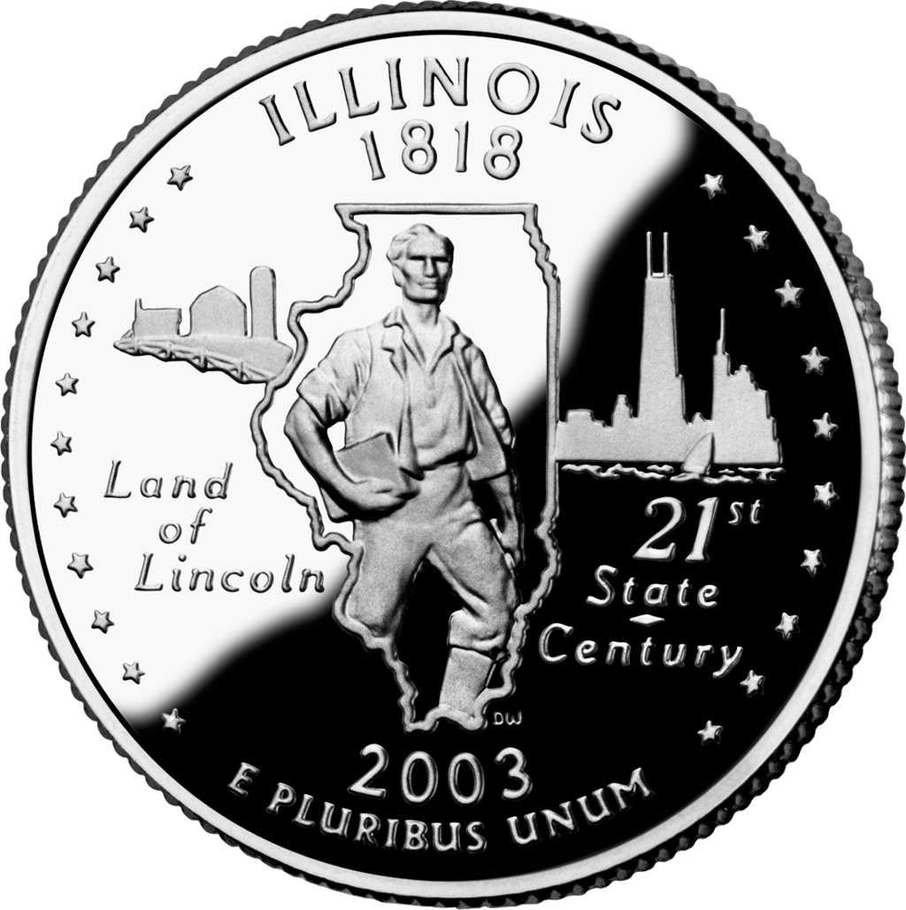
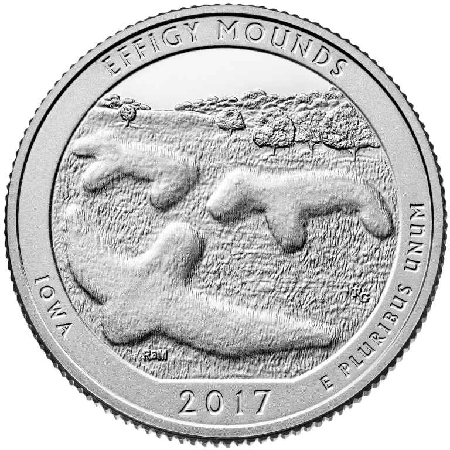
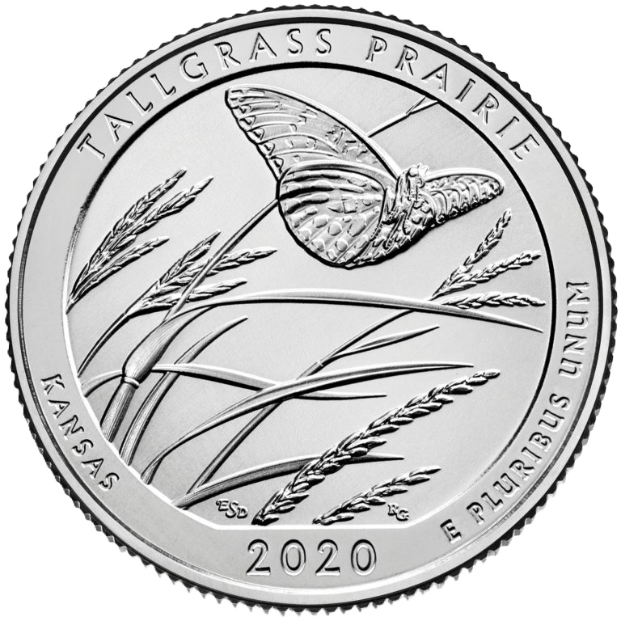
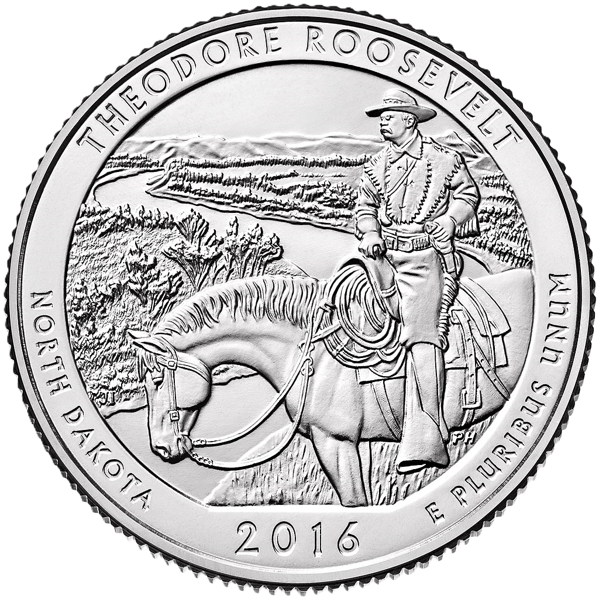
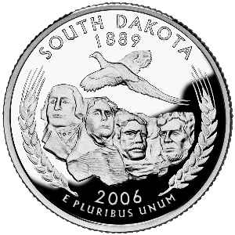
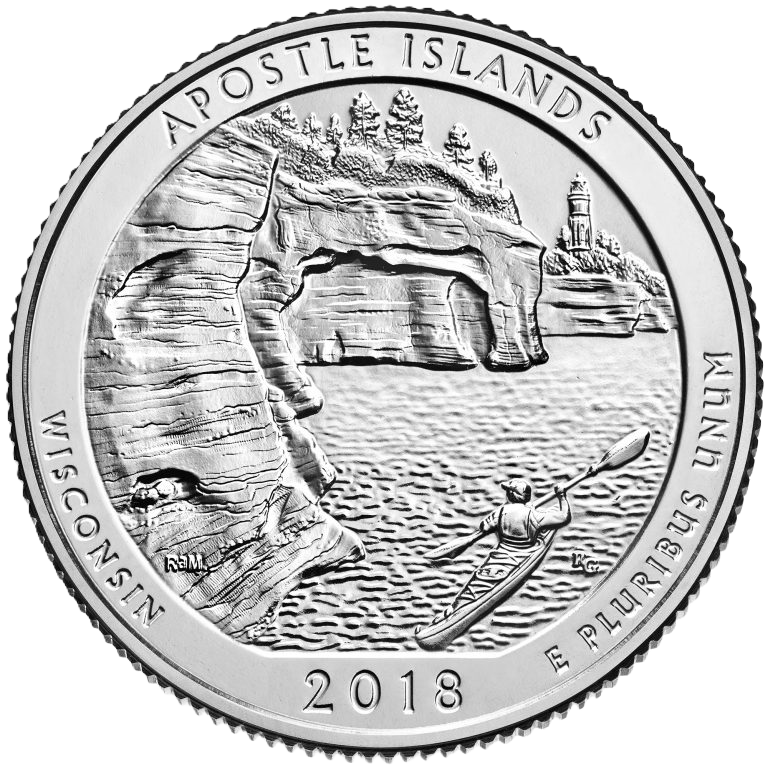

-
Alabama -
Alabama -
Alaska -
Alaska -
Arizona -
Arizona -
Arkansas -
Arkansas 
-
California -
California -
Colorado -
Colorado -
Connecticut -
Connecticut -
Delaware -
Delaware -
Florida -
Florida -
Georgia -
Georgia -
Hawaii -
Hawaii -
Idaho -
Idaho -
Illinois  -
Illinois -
Indiana -
Indiana -
Iowa -
Iowa  -
Kansas 
-
Kansas  -
Kentucky 
-
Kentucky 
-
Louisiana -
Louisiana -
Maine 
-
Maine -
Maryland -
Maryland -
Massachusetts -
Massachusetts -
Michigan -
Michigan -
Minnesota -
Minnesota -
Mississippi -
Mississippi -
Missouri -
Missouri -
Montana -
Montana -
Nebraska -
Nebraska -
Nevada -
Nevada -
New Hampshire -
New Hampshire -
New Jersey -
New Jersey -
New Mexico 
-
New Mexico -
New York -
New York -
North Carolina -
North Carolina -
North Dakota 
-
North Dakota  -
Ohio -
Ohio -
Oklahoma 
-
Oklahoma -
Oregon -
Oregon -
Pennsylvania -
Pennsylvania -
Rhode Island -
Rhode Island -
South Carolina -
South Carolina -
South Dakota  -
South Dakota -
Tennessee -
Tennessee -
Texas -
Texas -
Utah -
Utah -
Vermont -
Vermont -
Virginia -
Virginia -
Washington -
Washington -
West Virginia 
-
West Virginia -
Wisconsin -
Wisconsin  -
Wyoming -
Wyoming -
American Samoa -
American Samoa -
District of Columbia -
District of Columbia -
Guam -
Guam -
Northern Mariana Islands -
Northern Mariana Islands -
Puerto Rico -
Puerto Rico 
-
U.S. Virgin Islands -
U.S. Virgin Islands -
Maya Angelou 
-
Sally Ride 
-
Wilma Mankiller 
-
Nina Otero-Warren 
-
Anna May Wong 
-
Bessie Coleman -
Edith Kanaka'ole -
Eleanor Roosevelt -
Jovita Idar -
Maria Tallchief -
Pauli Murray -
Patsy Mink -
Mary Edwards Walker -
Celia Cruz -
Zitkala-Sa